You and five friends decide to work on a jigsaw puzzle. The 1,000 piece
puzzle has 50 rows and 20 columns. Each player begins with a random set of
200 pieces, puzzling them as best as they can. After all possible moves
are made, we are left with single pieces and matched pieces (both of which
count as one piece). These are then evenly redistributed at random among
the players, and the process repeats. How many rounds must be played
before less than 30% of the pieces have no match?
,,
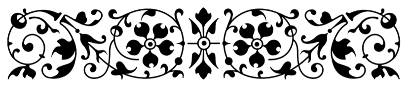
Solution
When I first approached this problem, I took a statistical approach.
Having little success, I decided to code a simulation and run some tests.
I've often found that a quick simulation yields large returns when
attempting a closed-form solution regarding difficult probability
problems. If you're interested in the code, it can be found on my GitHub.
This puzzle in particular lends itself to some beautiful artwork, so lets
get to it!
Method
We can represent the puzzle using a \(50 \times 20\) array, where each
entry in the array corresponds to ownership by a certain player. Using
this as our model, we then employ the following steps to create some
puzzle-logic, and then our game itself,
Build a dictionary whose keys represent the coordinates of each piece
in the array, and when a specific piece is called, returns a list of
possible connectors.
Numpy makes this task relatively easy through array indexing,
though it can get a little tricky thinking about edge/corner pieces.
Assign ownership to all of the puzzle pieces at random. Though our
specific problem concerns a \(50 \times 20\) array, we might as well
create a program for the general case of an \(n \times m\) array. Each
of \(p\) players can be represented by a value, \(1,...,p\). We can
assign these values equally throughout the array, and then shuffle it.
Now we iterate through the positions of every piece, and use the
dictionary and array we created to determine whether a connection is
possible (pieces must be adjacent and have the same owner). Every
piece then has an associated list of connectors. We save all of these
lists with reference to which player “owns” them.
Now we have something like a network! Every player has a list of
sublists, and each sublist represents a piece along with its (maximum
four) connectors. We can use NetworkX to join lists which share
any common elements, and therefore every player is left with lists
representing contiguous sets of pieces.
All that's left now is to throw all the new pieces back into the pot,
and redistribute them as evenly as possible. We then create a new
ownership array, and repeat steps 3-5 as many times as we like. Once
only \(p\) pieces remain, we consider the puzzle complete.
Results
As promised: the best part is the art. We can now visualize the resulting
puzzle as it is collectively solved by the puzzlers. Each shade of
blue-grey represents a specific player's pieces. As shown below, the
rounds progress from left to right, top to bottom, with the system's
entropy dropping from frame to frame. The first frame appears completely
unordered, like the static on a TV screen, while the last possesses mostly
large, bulky pieces.
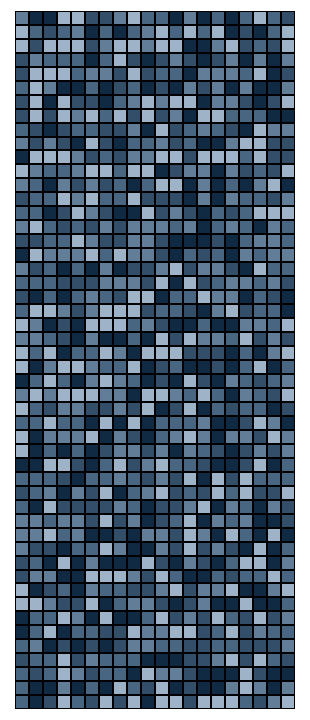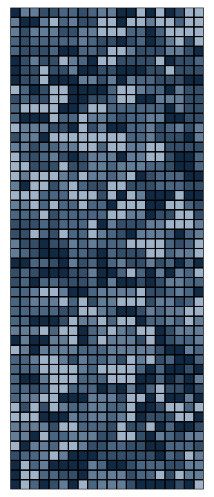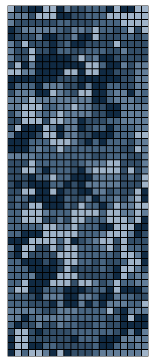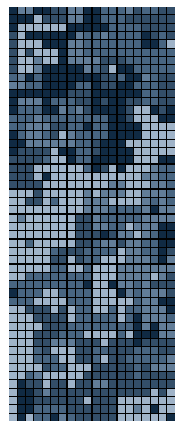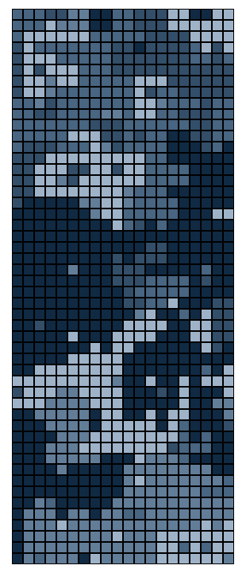
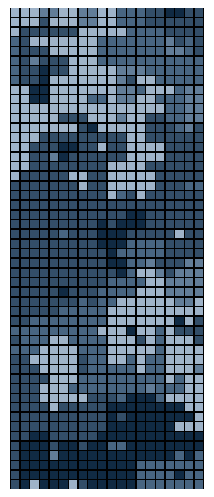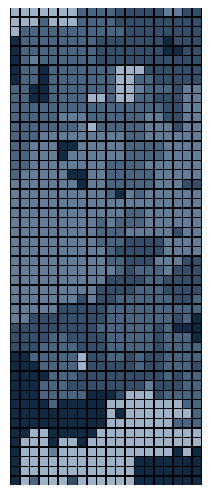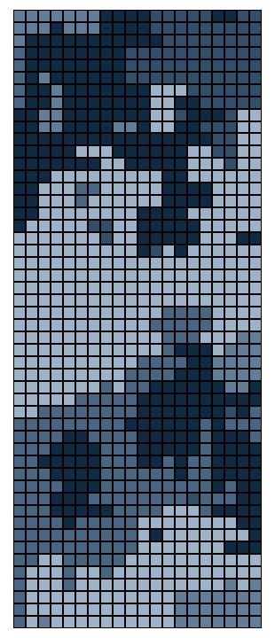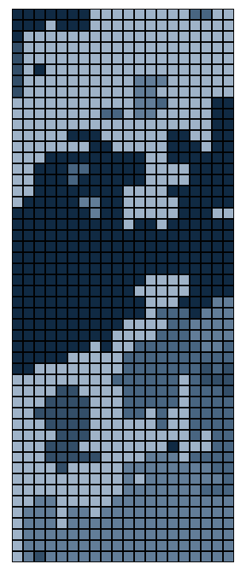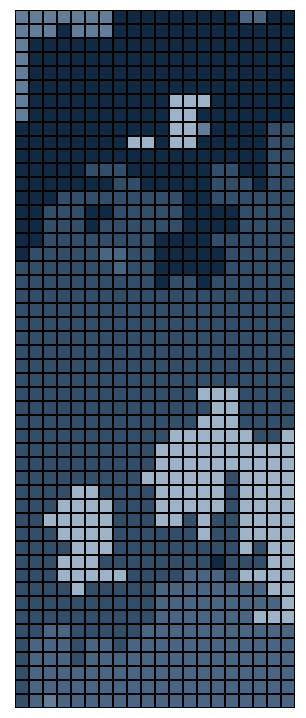
This graphic does not reveal "completion," however. The end state of any
puzzle under this model contains exactly \(p\) pieces, so in this case,
five. We now can run a simulation of 1,000 puzzles, each with ten rounds,
and record the proportion of single pieces at the end of each round. While
we're at it, we might as well try some puzzles of different sizes. The
original riddle calls for a puzzle of width 20, but let's examine what
happens as the puzzle width increases.
First off, we have our solution to the riddle. After only two rounds of
random shuffling and piecing, we possess less than 30% single pieces,
irrespective of puzzle width.
At first glace, the plot above seems to suggest that puzzle width has no
impact on the proportion of resulting single pieces at the end of each
round. However, if you interact with the graph and zoom in on the cluster
of points associated with any specific round, you should notice a fairly
robust pattern: increasing the puzzle's width tends to decrease the
proportion of single pieces, albeit only slightly. We can investigate this
phenomenon more in depth by use of another plot.
The use of this second graphic provides us with a lot of benefits. Use the
interactive legend to isolate any plot (double-click). The scale tranforms
to fit, which allows us to see what kind of error each trial carries. We
can easily see that, regarless of the round, higher puzzle widths tend to
carry smaller proportions of single pieces.
This is as far as I've gotten with this puzzle! I've been doing some
research into discrete Markov chain systems, which may be useful in
attempting a closed-form solution, though such a solution is obviously
highly complex.